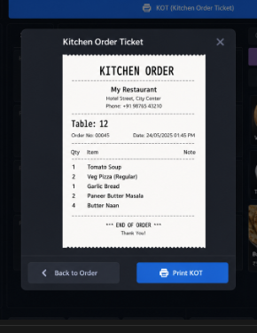

A dedicated KOT button and preview wizard for restaurants and bars. Print kitchen tickets on your 80mm receipt printer (Epson, IoT Box, or browser) without configuring separate Order Printers.

Separate KOT button
Full-width KOT bar on the order screen shows pending kitchen items by category.
The standard Send button stays unchanged for the normal kitchen flow.
Preview before printing
Click KOT to open a wizard on top of the current order screen.
Review the ticket, then print or go back to the order.
Per-product control
Mark only the products that need a kitchen ticket with the
KOT Product checkbox on the product form.
80mm thermal printer ready
Uses the same receipt printer pipeline as Odoo POS (Epson ePOS, IoT Box, or browser print fallback).
Company name and KITCHEN ORDER header are printed on every ticket.
Configure your POS receipt printer as usual in Odoo settings:
Requires Point of Sale, Restaurant, and Settle Due (pos_settle_due — Odoo Enterprise).
For support requests: sales@codebraze.com
Built for Odoo 19 · License LGPL-3